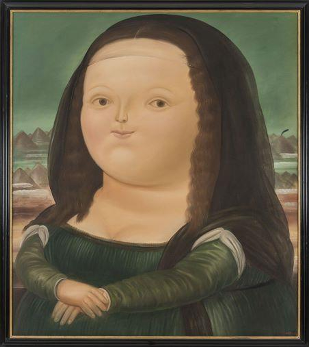
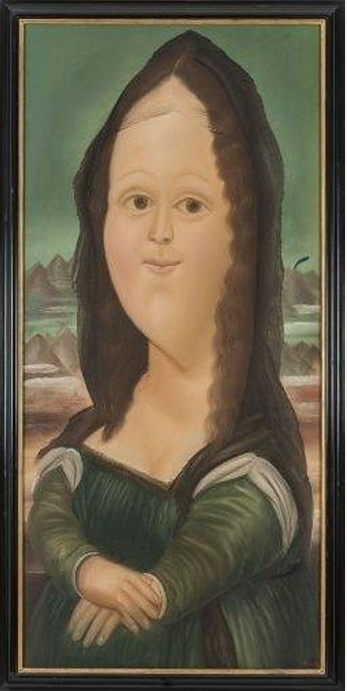
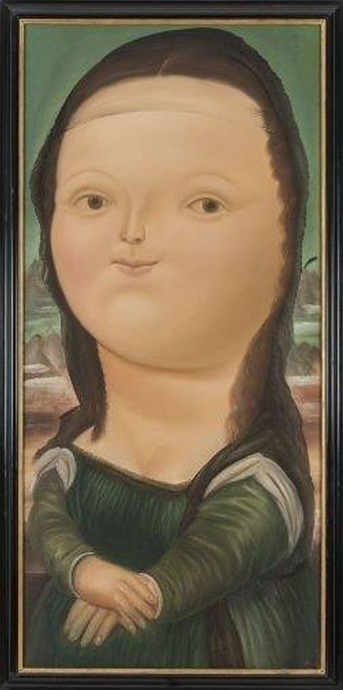
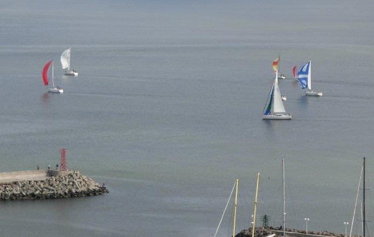
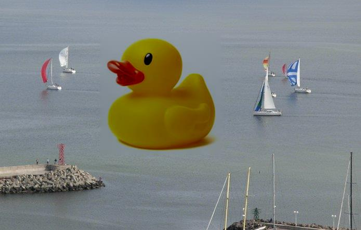
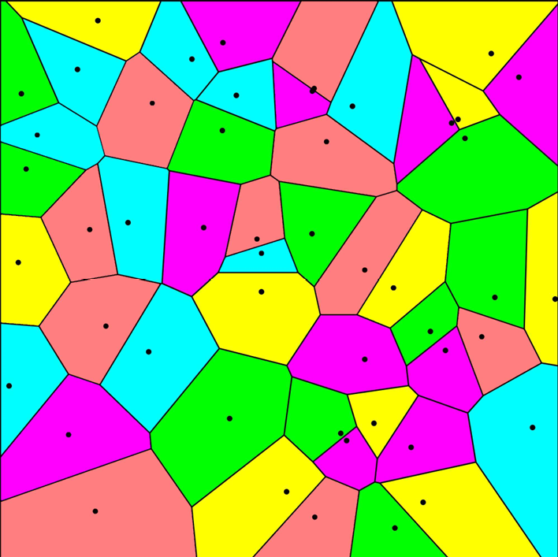

Course project : Software design and development
Prof. Julien CARDINAL, Xavier CLERC
September 2025 - January 2026
Fast marching is derived from Dijkstra's algorithm. It intends to find the minimal path, while simultaneously distinguishing the paths on an image.
The objective of the project is to implement an user-friendly software for Fast Marching
and its practical applications, such as edge detection and image segmentation, in Python.
A difficult task was implementing a progress bar to inform the user of the computation progression,
which required parallel computation and information transmission between different parts of the programme.



Mona Lisa, Botero
Seam Carving for Image processing
Course project : First-year annual project
Tutor Pascal MONASSE
January - June 2025
Seam Carving is an advanced image resizing method, without deforming or cropping important elements. It removes continuous seams with low energy.
The energy of a part of the image can be defined as the quantity of contrast or entropy.
Different data structures have been implemented and tested in C++. In particular, a data structure inspired by Knuth's Dancing Links demonstrated
significant improvement in time complexity, although space complexity had been higher.
This project also explores the applications of Seam carving, such as content enhancement and object removal. These applications are derived from the
modification of the energy of the image or the successive application of Seam removal.
Based on S.Avidan and A.
Shamir, Seam Carving for Content-Aware Image Resizing,ACM Transactions on Graphics
(TOG),vol.26,no.3,2007.


Original image and inserted object
Poisson Editor
Course project : Programming Workshop
Prof. Pascal MONASSE
February - June 2025
The Poisson Editor aims to reconstruct a part of an image, based exclusively on the gradient in this part, by solving differential equations.
In order to solve linear equations, the Fast Fourier Transform and the Gauss—Seidel methods have been implemented and compared in C++.
The computing time has been highly optimised by using sparse matrices. In addition, various practical applications,
like changing the texture, illumination or colour of a part of an image have been developed.
Based on P.Pérez, M.Gangnet, A.Blake,
Poisson image editing,ACM Transactions on Graphics (TOG), vol. 22, no. 3,
2003

A Voronoi diagram
Voronoi diagram
TIPE (supervised personal initiative project)
June 2023 - May 2024
Green-Sibson and Fortune algorithms for creating Voronoi diagrams have been implemented in OCaml. The time and space complexities
of each algorithm have been analysed and benchmarked. Indeed, Fortune algorithm, a sweepline algorithm, is the most efficient algorithm for
computing a Voronoi diagram. Conversely, the Green-Sibson algorithm benefits from its incremental aspect, especially if the diagram is constructed piece-wise.
I have developed various heuristics and strategies in Voronoi games.

![[github icon]](./images/github.png) /leocheng789
/leocheng789